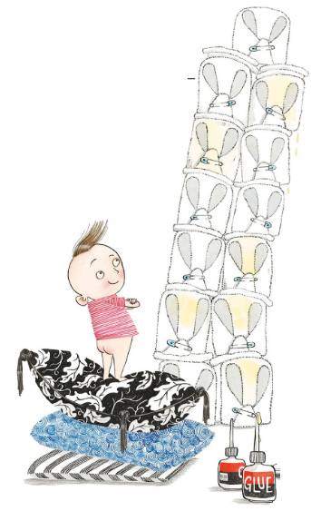
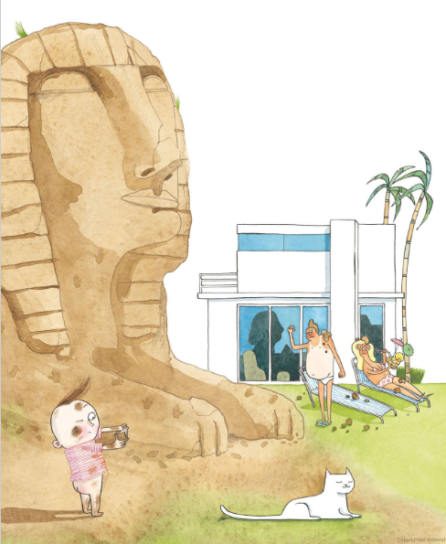

Watch Story:-
(Click Anywhere on the Page For A Page From Book)
Young Iggy Peck is an architect and has been since he was two, when he built a great tower— in only an hour —with nothing but diapers and glue.
Good Gracious, Ignacious! His mother exclaimed. That’s the coolest thing I’ve ever seen! But her smile faded fast as a light wind blew past and she realized those diapers weren’t clean! Ignacious, my son! What on Earth have you done? That’s disgusting and nasty! It stinks!
Click Me To Make Iggy Run
But Iggy was gone. He was out on the lawn using dirt clods to build a great Sphinx.
When Iggy was three, his parents could see his unusual passion would stay. Iggy Peck: I built churches and chapels from peaches and apples, and temples from modeling clay
At dinner one night, to my certain delight, Iggy got a bright gleam in his eye and out on the porch built the St. Louis Arch from pancakes and coconut pie